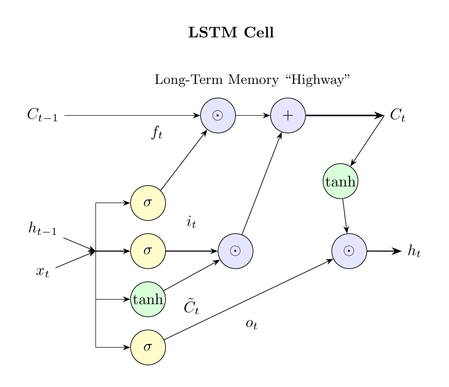
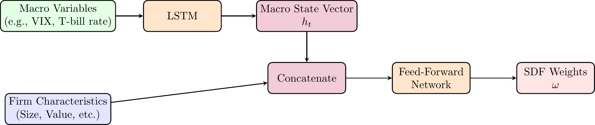

Under active development. A stable version is expected in November 2026. Feedback is welcome by email or via GitHub issues.
7 Long Short-Term Memory (LSTM) Networks
7.1 Overview
The previous chapter showed the central weakness of a plain recurrent neural network (RNN): the hidden state is recursively updated, but the gradients used for learning can vanish as they are propagated backward through many time steps. Long Short-Term Memory (LSTM) networks were designed to address precisely this problem.
LSTMs add a dedicated cell state C_t that acts as a stable memory path through time, controlled by gates — small neural-network components that decide what information to retain, what new information to add, and what part of the internal memory to expose as the hidden state.
For econometricians, LSTMs are useful when the relevant predictive state may evolve over time and depend on information from more than only the most recent observations. Examples include asset pricing with time-varying macroeconomic states, macroeconomic forecasting with long predictor histories, and volatility or risk forecasting with persistent regimes.
For optional visual intuition, this blog post gives a detailed informal discussion of LSTMs.
7.2 Roadmap
- We first introduce the LSTM cell state, hidden state, and gates.
- We then work through the LSTM update equations and notation.
- Next, we explain why the cell state improves gradient flow relative to a plain RNN.
- We discuss when the additional complexity of an LSTM is useful in econometric forecasting, and what changes — and what does not — when training one.
- We present a research application in asset pricing.
- We close with a look ahead from recurrent states to attention — a construction that lets a model consult earlier positions in a sequence directly instead of compressing the entire past into one state — plus key takeaways, common pitfalls, and manual forward-pass and gradient-flow exercises.
7.3 LSTM Architecture and Notation
LSTM networks, introduced by Hochreiter and Schmidhuber (1997), extend plain RNNs by adding a gating mechanism that controls long-term information flow; the forget gate, central to the modern form of the cell, was added later by Gers, Schmidhuber, and Cummins (2000). The notation below lists the several quantities the LSTM tracks at each time step.
At each time step t, an LSTM cell maintains the following quantities, where H is the number of hidden units and p the input dimension. To keep the gate equations light, we drop the boldface used for vectors in the RNN chapter: x_t, h_t, C_t, and the gates below are all vectors of the stated dimensions, and the weight matrices W_f, W_i, W_c, W_o are likewise set without boldface.
- Input: x_t \in \mathbb{R}^p, the current input vector
- Hidden state: h_t \in \mathbb{R}^H, the output of the LSTM cell, similar to RNN hidden states
- Cell state: C_t \in \mathbb{R}^H, the internal memory of the LSTM cell
The LSTM uses three gates and the candidate values (all in \mathbb{R}^H):
- Forget gate: f_t, controls what information to retain from or discard from the previous cell state
- Input gate: i_t, controls what new information to store in the cell state
- Candidate values: \tilde{C}_t, new candidate information that could be added to the cell state
- Output gate: o_t, controls what parts of the cell state to output as the hidden state
Update Equations and Weight Matrices
Let \sigma denote the sigmoid function and \tanh the hyperbolic tangent (mapping to (-1,1)). In each equation below, [h_{t-1}, x_t] stacks the previous hidden state and the current input into a single vector in \mathbb{R}^{H+p}, and \cdot denotes matrix-vector multiplication (the same symbol is also used later for ordinary scalar multiplication). Finally, \odot denotes the element-wise (Hadamard) product. The LSTM cell state and hidden state are updated according to:
\begin{aligned} f_t &= \sigma(W_f \cdot [h_{t-1}, x_t] + b_f) \quad \text{(forget gate)} \\ i_t &= \sigma(W_i \cdot [h_{t-1}, x_t] + b_i) \quad \text{(input gate)} \\ \tilde{C}_t &= \tanh(W_c \cdot [h_{t-1}, x_t] + b_c) \quad \text{(candidate values)} \\ C_t &= f_t \odot C_{t-1} + i_t \odot \tilde{C}_t \quad \text{(cell state update)} \\ o_t &= \sigma(W_o \cdot [h_{t-1}, x_t] + b_o) \quad \text{(output gate)} \\ h_t &= o_t \odot \tanh(C_t) \quad \text{(hidden state)} \end{aligned}
Each gate and the candidate values are computed using their own weight matrices and bias vectors. Since the input to each is the concatenation [h_{t-1}, x_t] \in \mathbb{R}^{H+p}, the dimensions are:
- W_f, W_i, W_c, W_o \in \mathbb{R}^{H \times (H+p)}: weight matrices
- b_f, b_i, b_c, b_o \in \mathbb{R}^H: bias vectors
Equivalently, partitioning each weight matrix into its state and input blocks — W_f = [W_{f,h} \; W_{f,x}] with W_{f,h} \in \mathbb{R}^{H \times H} and W_{f,x} \in \mathbb{R}^{H \times p} — gives W_f \cdot [h_{t-1}, x_t] = W_{f,h}\, h_{t-1} + W_{f,x}\, x_t: the concatenated form used here and the two-matrix form used for the plain RNN in the previous chapter describe the same model.
The Gating Mechanism
A “gate” is a mechanism to selectively let information pass. In LSTMs, this is achieved by combining a sigmoid activation function with element-wise multiplication. The sigmoid function squashes any input to a value between 0 and 1. This output vector then acts as a gate keeper:
- A gate value close to 0 means “let almost nothing through” (a nearly closed gate).
- A gate value close to 1 means “let almost everything through” (a nearly open gate).
- Intermediate values pass information through partially. (The sigmoid approaches 0 and 1 without attaining them — a point we return to below.)
Figure 7.1 traces how these pieces fit together within a single time step. When reading it, note in particular how short the top path from C_{t-1} to C_t is compared with everything else in the cell.
Figure 7.1 makes the division of labor visible. The top path — from C_{t-1} through one elementwise multiplication and one addition to C_t — is short and nearly linear: this is the route along which information, and later gradient signal, can travel across many periods, and the next section analyzes exactly this path. Everything else in the cell exists to regulate it: the gates decide how much of the old state survives (f_t), how much new information enters (i_t \odot \tilde{C}_t), and how much of the internal memory is exposed to the rest of the network as h_t.
7.4 Gradient Flow in LSTMs
LSTMs address the vanishing-gradient problem of plain RNNs through the design of the cell state and its update rule.
The Cell State as a Gradient Highway
The LSTM introduces a separate cell state C_t that follows the update rule:
C_t = f_t \odot C_{t-1} + i_t \odot \tilde{C}_t
The cell-state update C_t = f_t \odot C_{t-1} + i_t \odot \tilde C_t has an additive structure: when the forget gate f_t is close to 1, the coordinatewise derivative \partial C_{t,j}/\partial C_{t-1,j} = f_{t,j} — computed holding the gates and candidate fixed, as formalized just below — is also close to 1, so gradient signal propagates with little attenuation. This is the structural contrast with a plain RNN, where the corresponding partial derivative is the product of a weight-matrix factor and an activation derivative.
To isolate the cell-state gradient path, fix the gate variables f_t,i_t,o_t and the candidate \tilde C_t as constants. Because the update acts elementwise, the Jacobian of C_t with respect to C_{t-1} is the diagonal matrix
\frac{\partial C_t}{\partial C_{t-1}}\bigg|_{\text{gates fixed}} = \operatorname{diag}(f_t),
so the recursion decouples coordinate by coordinate: for hidden coordinate j,
\frac{\partial C_{t,j}}{\partial C_{t-1,j}}\bigg|_{\text{gates fixed}} = f_{t,j},
and chaining this over T-t steps yields the cell-state path
\frac{\partial C_{T,j}}{\partial C_{t,j}}\bigg|_{\text{gates fixed}} = \prod_{k=t+1}^T f_{k,j}.
In a full backward pass, the gates themselves depend on h_{k-1} = o_{k-1} \odot \tanh(C_{k-1}), so there is an additional indirect dependence through the gate-computing networks. We return to this in the Scope of the result note below; for the qualitative gradient-highway picture, holding the gates fixed is sufficient.
Key Differences from Plain RNNs
The gradient flow in LSTMs differs from plain RNNs in three ways:
Additive Highway: The cell state update has an explicit additive path (C_t = f_t \odot C_{t-1} + i_t \odot \tilde{C}_t) that bypasses the tanh nonlinearity. In a plain RNN, all information is compressed through a single tanh (h_t = \tanh(W_{hh} h_{t-1} + W_{xh} x_t + b_h)), so gradients must pass through the activation’s derivative at every step. The LSTM’s cell state can carry a gradient signal backward with no activation derivative in the path when f_t \approx 1.
Controlled Forgetting: The forget gate f_t \in (0,1) controls how much of the previous cell state to retain. The interval is open because the sigmoid approaches its bounds without attaining them, so f_t = 1 is unreachable and the cell-state path always decays to some degree. What changes relative to the plain RNN is that the network controls the rate: when f_t is close to 1, the per-step attenuation is slight.
Gate-Controlled Rather Than Norm-Controlled: Along the cell-state path with the gates held fixed, the attenuation factor is a product of forget-gate values rather than a product of recurrent weight matrices, so it does not depend on \|W_{hh}\|. This is a statement about that one path: the forget gates are themselves outputs of \sigma(W_f\cdot[h_{t-1},x_t]+b_f) and therefore do depend on the weights, and the full parameter gradient additionally flows through the gate-producing networks. See the Scope of the result note below.
Comparison of Gradient Expressions
\begin{aligned} \text{Plain RNN:} \quad &\frac{\partial h_T}{\partial h_t} = \prod_{k=t+1}^T \frac{\partial h_k}{\partial h_{k-1}} = \prod_{k=t+1}^T \text{diag}\!\bigl(\tanh'(W_{hh} h_{k-1} + W_{xh} x_k + b_h)\bigr)\, W_{hh} \\ \text{LSTM (cell-state path, gates fixed, coordinate } j\text{):} \quad &\frac{\partial C_{T,j}}{\partial C_{t,j}} = \prod_{k=t+1}^T f_{k,j} \end{aligned}
In plain RNNs, each factor involves the weight matrix W_{hh} and the derivative of the activation function, leading to exponential decay or explosion. In LSTMs, the cell-state-path factors are simply the forget-gate values, which the network can learn to set close to 1 when long-run information should be preserved.
Selective Memory Through Adaptive Gating
The forget gate f_t = \sigma(W_f \cdot [h_{t-1}, x_t] + b_f) provides adaptive memory control:
Selective Forgetting: When the network determines that previous information is no longer relevant, it can set f_t \approx 0 to “forget” the cell state.
Long-term Retention: When information should be preserved, the network can set f_t \approx 1, allowing gradients to flow backward with minimal attenuation.
Context-Dependent Decisions: The forget gate’s dependence on both h_{t-1} and x_t allows the network to make context-aware decisions about what to remember or forget.
The Gradient Highway Effect
When the forget gate learns to stay close to 1 in the coordinates that carry important long-term dependencies:
\frac{\partial C_{T,j}}{\partial C_{t,j}} = \prod_{k=t+1}^T f_{k,j} \approx 1^{T-t} = 1
This means gradients can flow backward through many time steps without significant attenuation, enabling the learning of long-term dependencies. The decay is never switched off entirely: each finite-horizon product lies strictly below one, it shrinks geometrically when the gates stay uniformly below some \bar{f} < 1, and at rate f_j^{\,T-t} when the gate is constant — but the network chooses the rate. That is the substantive contrast with the plain RNN, where the decay rate is set by W_{hh} together with the activation derivatives along the trajectory — quantities that simultaneously have to serve every other function of the recursion.
Unlike plain RNNs, where gradient flow is shaped by repeated multiplication with the recurrent weight matrix, LSTMs learn when to let gradients flow through the forget gates. This learned control is the mechanism by which an LSTM can learn long-run dependence more reliably — recall from Exercise 6.1 that the plain RNN’s problem is one of training signal, not of what the architecture can represent.
Scope of the result. The expression \partial C_{T,j}/\partial C_{t,j} = \prod_k f_{k,j} describes only the cell-state path. Parameter gradients also flow through the hidden state h_t = o_t \odot \tanh(C_t) and through the gate-producing networks themselves, where they involve products of sigmoid and tanh derivatives that can attenuate just as in a plain RNN. The cell state acts as a gradient highway for one component of the backward pass; it does not eliminate all multiplicative factors and therefore does not formally resolve the vanishing-gradient problem. It creates a route on which attenuation can be much slower, but whether a fitted LSTM learns useful long-run dependence remains an empirical question to be judged by validation at deployment-relevant horizons.
7.5 LSTM vs. Plain RNN
The architectural and gradient-flow comparisons summarize the mechanisms introduced by Hochreiter and Schmidhuber (1997) and Gers, Schmidhuber, and Cummins (2000). The parameter counts follow directly from the displayed update equations. The computational comparison counts affine blocks per time step; it is not a claim that an LSTM takes exactly four times as long in every implementation.
| Aspect | Plain RNN | LSTM |
|---|---|---|
| Memory capability | Can represent long-run dependence, but its long-gap training signal may vanish | Adds a controlled cell-state path that can retain long-run information more reliably |
| Gradient flow | Products of recurrent weight matrices and activation derivatives | Additive cell-state path with products of forget-gate values |
| Vanishing gradients | Highly susceptible along the recurrent-state path | Mitigated along the cell-state path, but not eliminated throughout the network |
| Parameters (recurrent cell) | H(H+p) + H | 4H(H+p) + 4H (four weight blocks, approximately four times the RNN cell) |
| Computational cost | One recurrent affine block per time step | Four gate or candidate affine blocks per time step; wall-clock cost is implementation-dependent |
When to use LSTM:
- Forecasting tasks where information from distant observations plausibly matters, such as macroeconomic state dynamics or asset-pricing applications with persistent risk states.
- Settings where validation performance justifies the extra parameters and computational cost.
When a plain RNN might suffice:
- Problems with very short sequences where long-term memory is not needed.
- When computational resources are extremely limited.
Question for Reflection
Suppose an LSTM is trained on monthly data and the forget gate learns values close to 1 for one hidden dimension and close to 0 for another. Using the gates-fixed coordinatewise gradient expression \partial C_{T,j} / \partial C_{t,j} = \prod_{k=t+1}^{T} f_{k,j}, which coordinate attenuates information more slowly? Can the phrase “close to 1” alone justify saying that its gradient is essentially undamped over an arbitrary horizon?
Suggested Answer
The high-retention coordinate attenuates information more slowly, while the low-retention coordinate’s product quickly collapses toward zero. But “close to 1” is not enough to quantify retention without both a numerical gate value and a horizon: for example, 0.99^{30} \approx 0.74, whereas 0.99^{300} \approx 0.05. The LSTM can therefore dedicate some coordinates to slower-moving state and others to local dynamics, but even a high-retention coordinate is not undamped over every horizon.
7.6 Training an LSTM
Nothing in the estimation toolkit changes when moving from a plain RNN to an LSTM. Training minimizes a loss L over windows cut from the series, gradients are computed by backpropagation through time through the unrolled cell, and the fixed-window and truncated-backpropagation choices of the previous chapter apply unchanged — including the caveat that dependence beyond the window length cannot be learned. What changes is what flows through the backward pass: alongside the hidden-state path, the cell-state path contributes the gate-controlled products analyzed above.
Two practical differences deserve mention. First, the parameter count roughly quadruples relative to a plain RNN cell of the same width (4H(H+p)+4H against H(H+p)+H, as in the table above), so overfitting concerns and validation discipline bite correspondingly harder in the small samples typical of macroeconomic applications. Second, gradient clipping remains standard practice: the cell state tames the vanishing problem along one path, but gradients can still explode through the gate-producing networks, and the clipping safeguard from the RNN training discussion carries over unchanged. In Keras, finally, the switch is one line — an LSTM layer in place of a SimpleRNN layer — as the empirical chapter shows in its volatility application.
7.7 Research Application: Deep Learning in Asset Pricing
To see how LSTMs are used in current econometric research, consider two closely related lines of work in empirical asset pricing: the return-prediction approach of Gu, Kelly, and Xiu (2020) and the no-arbitrage approach of Chen, Pelger, and Zhu (2024), which embeds an LSTM at its core.
Two research objectives. Both papers ask whether neural networks can improve on linear specifications of the relation between firm characteristics, macroeconomic information, and stock returns, but they target different objects. Gu, Kelly, and Xiu (2020) predict returns, whereas Chen, Pelger, and Zhu (2024) estimate a no-arbitrage stochastic discount factor (SDF), the pricing kernel implied by the absence of arbitrage. A linear characteristic model specifies \mathbb{E}[r_{i,t+1}] = \beta_0 + \sum_k \beta_k \cdot \text{characteristic}_{i,t,k} in advance. A neural network instead estimates a flexible function \mathbb{E}[r_{i,t+1}] = f(\text{characteristics}_{i,t}), allowing nonlinearities and interactions that would otherwise have to be chosen manually. The two papers differ in whether that flexibility is disciplined by a prediction loss or by asset-pricing moment restrictions.
Return prediction with a feed-forward network. Gu, Kelly, and Xiu (2020) frame the task as a large-scale supervised prediction problem: a panel regression with a flexible functional form.
- Inputs (\mathbf{x}_{i,t}): In the paper’s baseline, 94 firm-specific characteristics for stock i at time t (e.g., size, value, momentum, profitability), which are further interacted with eight aggregate time-series predictors and combined with industry indicators — over 900 baseline signals in total. The illustration below uses the 94 characteristics alone.
- Target (y_{i,t+1}): The realized excess return of stock i in the next month.
- Objective: Train a neural network f_\theta to minimize the mean squared error (MSE) between predicted and realized returns over a large dataset of all US stocks from 1957 to 2016. \min_\theta \frac{1}{N \cdot T} \sum_{i,t} (r_{i,t+1} - f_\theta(\mathbf{x}_{i,t}))^2 The display is schematic: the U.S. stock panel is unbalanced, so the actual average runs over the observed stock-month pairs rather than all N \cdot T combinations.
The trained network is a return forecaster: economics enters primarily through the target, predictors, and portfolio evaluation, rather than through a no-arbitrage estimating equation. A natural architecture is a plain feed-forward network for the cross-sectional relationship; Figure 7.2 sketches its shape.
graph LR
A["Input Layer<br/>(94 Characteristics)"] --> B["Hidden Layer 1<br/>(32 neurons, ReLU)"]
B --> C["Hidden Layer 2<br/>(16 neurons, ReLU)"]
C --> D["Hidden Layer 3<br/>(8 neurons, ReLU)"]
D --> E["Output Layer<br/>(1 neuron, linear)"]
style A fill:#e6f2ff,stroke:#333
style B fill:#fff2e6,stroke:#333
style C fill:#fff2e6,stroke:#333
style D fill:#fff2e6,stroke:#333
style E fill:#ffe6e6,stroke:#333
The depth of the network allows it to learn a hierarchy of features. For example, the first layer might learn to combine basic accounting ratios into a value signal, and a deeper layer could then learn to model the interaction between this value signal and momentum signals.
From prediction to a no-arbitrage objective. Chen, Pelger, and Zhu (2024) take a deliberately different route. Rather than forecasting returns, they estimate the SDF M_{t+1} directly, and they replace the MSE objective with the no-arbitrage moment conditions that define the SDF:
\mathbb{E}\big[M_{t+1}\, R^e_{i,t+1}\, g(I_t, I_{i,t})\big] = 0 \quad \text{for all conditioning functions } g,
where R^e_{i,t+1} is the excess return on stock i, I_t and I_{i,t} collect the macroeconomic and firm-specific information available at time t, and g(\cdot) plays the role of the test assets, or instruments. In generalized method of moments (GMM), parameters are chosen to make sample analogues of model-implied moment restrictions as close to zero as possible. Conditional GMM allows those restrictions to be multiplied by functions of the information available at time t; here, g creates those functions. Their data are 46 firm characteristics together with 178 macroeconomic time series, for US stocks from 1967 to 2016. The estimation principle is therefore conditional GMM, not least-squares prediction. The authors argue that this distinction carries real weight: in their comparisons, machine-learning models trained on a pure prediction objective can perform worse than linear models that impose no-arbitrage.
A recurrent macro state. Asset-pricing theory — for instance, the intertemporal capital asset pricing model (ICAPM) — suggests that risk premia vary over time with the macroeconomic state. Feeding all 178 raw macro series into the SDF network each month would treat the latest releases as the complete state, even though the economically relevant state may be a persistent, low-dimensional summary of macroeconomic history. Chen, Pelger, and Zhu (2024) therefore use an LSTM to process the macroeconomic sequence and compress it into a small hidden state h_t, a learned representation of the current macro state. This state vector enters the SDF network alongside the firm characteristics.

This architecture allows the model to learn a state-dependent SDF: the discount factor is built from portfolio weights \omega that depend on both firm-level and macro information,
M_{t+1} = 1 - \sum_{i} \omega\big(\text{characteristics}_{i,t},\, h_t\big)\, R^e_{i,t+1},
where the weight function \omega is a feed-forward network and h_t is the LSTM’s macro state.
Adversarial instruments. The moment condition must hold for all conditioning functions g, which no finite procedure can impose directly. The authors’ solution is a Generative Adversarial Network (GAN) framework: a second network chooses g — in effect, the test assets — to make the pricing errors of the current SDF as large as possible, while the SDF network is trained to shrink them. The adversary thus supplies the hardest-to-price moments in the conditional GMM problem; it is an estimation device for the moment restrictions, not an adjustment to a prediction loss. We do not cover GANs further in this book.
Empirical results. The headline numbers, all from Chen, Pelger, and Zhu (2024), summarize what this combination of economic structure and neural-network flexibility delivers:
- Performance: The full model (GAN-SDF) achieves an annual out-of-sample Sharpe ratio of approximately 2.6, compared with about 1.7 for linear models and 0.8 for the Fama-French 5-factor model.
- Explanatory Power: The model explains over 90% of the cross-sectional variation in returns on 46 well-known anomaly portfolios.
- Main lesson: Combining economic structure (no-arbitrage moment conditions, a time-varying macro state) with machine-learning flexibility (LSTMs, adversarial estimation) outperforms both linear models and prediction-only machine learning. The economics does real work in the estimation objective — it is not merely decoration around a forecasting network.
7.8 From Recurrent States to Attention
The LSTM cell state C_t is a fixed-dimensional vector that summarizes the relevant past at each step. Its width H is chosen once, before training, and does not change with the length of the input sequence. Everything a plain LSTM uses at step t to forecast must pass through this bottleneck.
This design is efficient, but it has a structural cost. If the predictively relevant past at step t requires distinguishing fine information from many earlier positions, an H-dimensional vector has to compress all of it into the same width. For moderately long sequences or for tasks where position-specific information matters — a monetary-policy statement whose meaning depends on whether a given clause appears in paragraph two or paragraph eight, for instance — the bottleneck can become binding: it binds when the predictively relevant past does not admit an adequate H-dimensional summary.
One of the later chapters, Foundation Models for Economic Text and Expectations, introduces a different construction. The transition from recurrent states to attention is the key structural change we emphasize in moving from the RNN/LSTM chapters to the foundation-model chapter — which also changes positional representation, parallel computation, and training design. We return to it formally in From Words to Representations.
Where the implementation lives. As in the RNN chapter, we have not fit an LSTM in code here. The empirical chapter on networks for time series trains an LSTM on realized-volatility data with the complete Python pipeline — sequence construction, chronological splits, training-only scaling, tuning, and evaluation against a heterogeneous autoregressive (HAR) benchmark.
7.9 Summary
Key Takeaways
- LSTMs modify the plain RNN state update to reduce the vanishing-gradient problem.
- The cell state C_t provides a more stable path for information and gradients to move through time.
- Forget, input, and output gates learn what to retain, what to add, and what to reveal at each time step.
- The improvement comes at a cost: an LSTM has several sets of weights and is more computationally expensive than a plain RNN.
- In econometric forecasting, LSTMs are most useful when the predictive state is likely persistent and validation performance supports the added complexity.
- In asset-pricing applications, an LSTM can be used to represent a time-varying macroeconomic state that conditions the cross-sectional pricing function.
Common Pitfalls
- Thinking that LSTMs eliminate all long-run dependence problems; they mitigate vanishing gradients, but still require enough data and careful validation.
- Interpreting the LSTM cell state as a directly observed economic state rather than a learned predictive representation.
- Using an LSTM when a lagged feed-forward network or simpler time-series model already performs well out of sample.
- Forgetting that the gates add parameters, making overfitting a serious concern in small macroeconomic samples.
- Evaluating LSTM forecasts with random splits that violate the forecast-origin information set.
7.10 Exercises
Exercise 7.1: Manual LSTM Forward Pass
Consider an LSTM cell with a single unit processing one time step. You will compute all gate values, cell state, and hidden state step by step.
Given Parameters:
- Forget gate: W_f = [0.3, 0.2], b_f = 0.1
- Input gate: W_i = [0.4, 0.1], b_i = 0.0
- Output gate: W_o = [0.2, 0.5], b_o = 0.2
- Candidate values: W_c = [0.6, -0.3], b_c = 0.0
Initial Conditions: - Current input: x_1 = 0.5 - Previous hidden state: h_0 = 0.3 - Previous cell state: C_0 = 0.4
Parts:
- Compute the forward pass. Compute, in order, the forget gate f_1, the input gate i_1, the candidate values \tilde{C}_1, the updated cell state C_1, the output gate o_1, and the hidden state h_1.
- Interpret the update. Decompose C_1 into its two terms, f_1 \odot C_0 and i_1 \odot \tilde{C}_1. Which term dominates, and what does this say about how much the cell relies on old memory versus new information at this step? Then solve for the input-gate value i^\ast that would make the two terms equal, holding \tilde{C}_1 fixed, and explain what the result reveals about what a gate can and cannot do.
Note: Use sigmoid \sigma(z) = \frac{1}{1+e^{-z}} for gates and \tanh for candidate values and final hidden state computation. Use the approximations \sigma(0.29) \approx 0.572, \sigma(0.17) \approx 0.542, \sigma(0.51) \approx 0.625, \tanh(0.03) \approx 0.030, and \tanh(0.245) \approx 0.240.
Exam-level as scaffolding: Part 1 is mechanical substitution into the gate equations and works best as a warm-up for Exercise 7.2; Part 2 adds an interpretive check with a counterfactual on the gate’s range.
Hint for Part 1
Concatenate the previous hidden state and current input: [h_{t-1}, x_t] = [h_0, x_1] = [0.3, 0.5]. All weight matrices operate on this concatenated vector via the dot product, W \cdot [h_{t-1}, x_t] + b — the same construction applies in every subsequent part.
Solution
The LSTM equations are:
\begin{aligned} f_t &= \sigma(W_f \cdot [h_{t-1}, x_t] + b_f) \quad \text{(forget gate)} \\ i_t &= \sigma(W_i \cdot [h_{t-1}, x_t] + b_i) \quad \text{(input gate)} \\ \tilde{C}_t &= \tanh(W_c \cdot [h_{t-1}, x_t] + b_c) \quad \text{(candidate values)} \\ C_t &= f_t \odot C_{t-1} + i_t \odot \tilde{C}_t \quad \text{(cell state)} \\ o_t &= \sigma(W_o \cdot [h_{t-1}, x_t] + b_o) \quad \text{(output gate)} \\ h_t &= o_t \odot \tanh(C_t) \quad \text{(hidden state)} \end{aligned}
where \sigma(z) = \frac{1}{1+e^{-z}} is the sigmoid function.
Given: x_1 = 0.5, h_0 = 0.3, C_0 = 0.4
The concatenated input vector is [h_0, x_1] = [0.3, 0.5].
Part 1: Forward pass
Forget gate.
\begin{aligned} f_1 &= \sigma(W_f \cdot [0.3, 0.5] + b_f) \\ &= \sigma(0.3 \cdot 0.3 + 0.2 \cdot 0.5 + 0.1) \\ &= \sigma(0.09 + 0.1 + 0.1) \\ &= \sigma(0.29) \approx 0.572 \end{aligned}
Input gate.
\begin{aligned} i_1 &= \sigma(W_i \cdot [0.3, 0.5] + b_i) \\ &= \sigma(0.4 \cdot 0.3 + 0.1 \cdot 0.5 + 0.0) \\ &= \sigma(0.12 + 0.05) \\ &= \sigma(0.17) \approx 0.542 \end{aligned}
Candidate values.
\begin{aligned} \tilde{C}_1 &= \tanh(W_c \cdot [0.3, 0.5] + b_c) \\ &= \tanh(0.6 \cdot 0.3 + (-0.3) \cdot 0.5 + 0.0) \\ &= \tanh(0.18 - 0.15) \\ &= \tanh(0.03) \approx 0.030 \end{aligned}
Cell state update.
\begin{aligned} C_1 &= f_1 \odot C_0 + i_1 \odot \tilde{C}_1 \\ &= 0.572 \cdot 0.4 + 0.542 \cdot 0.030 \\ &= 0.229 + 0.016 \\ &= 0.245 \end{aligned}
Output gate.
\begin{aligned} o_1 &= \sigma(W_o \cdot [0.3, 0.5] + b_o) \\ &= \sigma(0.2 \cdot 0.3 + 0.5 \cdot 0.5 + 0.2) \\ &= \sigma(0.06 + 0.25 + 0.2) \\ &= \sigma(0.51) \approx 0.625 \end{aligned}
Hidden state.
\begin{aligned} h_1 &= o_1 \odot \tanh(C_1) \\ &= 0.625 \cdot \tanh(0.245) \\ &= 0.625 \cdot 0.240 \\ &\approx 0.150 \end{aligned}
Final Results for time step 1:
- Forget gate: f_1 \approx 0.572
- Input gate: i_1 \approx 0.542
- Candidate values: \tilde{C}_1 \approx 0.030
- Cell state: C_1 \approx 0.245
- Output gate: o_1 \approx 0.625
- Hidden state: h_1 \approx 0.150
Part 2: Old memory versus new information
The two terms of the update are f_1 \odot C_0 = 0.572 \times 0.4 \approx 0.229 and i_1 \odot \tilde{C}_1 = 0.542 \times 0.030 \approx 0.016. The memory term dominates by an order of magnitude: at this step the cell mostly carries forward old information and adds little from the current input. The reason is not the input gate — it is moderately open (i_1 \approx 0.542) — but the candidate itself: its pre-activation is only 0.03, and since \tanh(z) \approx z near zero, the candidate \tilde{C}_1 \approx 0.030 is itself close to zero, so there is little new content to add, however open the gate. The moderately open forget gate (f_1 \approx 0.572) passes on roughly half of the previous cell state.
For the two terms to be equal with \tilde{C}_1 held fixed, the input gate would need i^\ast = 0.229 / 0.030 \approx 7.6 — far outside the sigmoid’s range (0,1). No admissible input-gate value can make the new information dominate here. This is the general lesson of the counterfactual: a gate rescales its channel by a factor between 0 and 1, so it can attenuate a signal but never amplify one. Dominance of new information would require a larger candidate value, not a wider-open gate.
Further remarks:
Selective Output: The output gate (o_1 = 0.625) filters what portion of the cell state becomes the hidden state, demonstrating how LSTMs can store information internally without immediately exposing it.
Computational Complexity: Even for a single time step with one unit, LSTMs require computing four different weight-input combinations, highlighting why they are computationally more expensive than plain RNNs.
Exercise 7.2: The Cell-State Gradient Highway
Consider a scalar LSTM cell with state update
C_k = f_k\, C_{k-1} + i_k\, \tilde{C}_k,
where the forget gate f_k \in (0,1), the input gate i_k \in (0,1), and the candidate \tilde{C}_k \in (-1,1) are computed from (h_{k-1}, x_k) as in the chapter. In Parts 1 and 2, use the gates-fixed approximation from the chapter: treat f_k, i_k, and \tilde{C}_k as fixed numbers that do not vary with the earlier cell state.
Derive
\frac{\partial C_T}{\partial C_t} = \prod_{k=t+1}^{T} f_k
under the gates-fixed approximation, starting from the one-step derivative \partial C_k / \partial C_{k-1}.
Compare this with the one-dimensional RNN sensitivity from Exercise 6.1, \partial h_T/\partial h_t = \prod_{k=t+1}^{T} W_{hh} \tanh'(z_k), whose magnitude is bounded by |W_{hh}|^{T-t}. Suppose W_{hh} = 0.8 (as in Exercise 6.2) while the LSTM has learned f_k = 0.99 for every k. For a horizon of T-t = 30 steps, evaluate the RNN upper bound and the LSTM cell-path magnitude (use 0.8^{30} \approx 0.0012 and 0.99^{30} \approx 0.74) and explain which two structural features of the cell-state update produce the difference: what replaces the repeated multiplication by W_{hh}, and why does no activation derivative appear in the LSTM product?
Part 1 holds the gates fixed. Identify the channels through which gradients flow in a full backward pass that this approximation ignores, and explain why the claim “LSTMs eliminate vanishing gradients” therefore does not follow from Part 1. Then explain why this limitation makes an out-of-sample comparison against a lagged feed-forward or heterogeneous autoregressive (HAR) benchmark necessary before attributing forecast gains to learned long memory.
Exam level. Part 1 is a short chain-rule derivation; Part 2 rewards understanding of what structurally differs between the two recursions; Part 3 tests whether students can locate the limits of the gates-fixed result.
Hint for Part 3
Ask which quantities at step k+1 are computed from h_k, and what h_k itself is computed from.
Solution
Part 1: The gates-fixed derivation
Under the gates-fixed approximation, the only dependence of C_k on C_{k-1} is the explicit linear term:
\frac{\partial C_k}{\partial C_{k-1}} = f_k,
since i_k \tilde{C}_k is treated as a constant. By the chain rule along the cell-state path,
\frac{\partial C_T}{\partial C_t} = \prod_{k=t+1}^{T} \frac{\partial C_k}{\partial C_{k-1}} = \prod_{k=t+1}^{T} f_k.
Part 2: Comparison with the RNN recursion
For the RNN, |\partial h_T/\partial h_t| \le |W_{hh}|^{T-t} because |\tanh'(z)| \le 1; with W_{hh} = 0.8 and T-t = 30, the bound is 0.8^{30} \approx 0.0012 — the gradient signal from step t is essentially extinguished. For the LSTM with f_k = 0.99, the cell-state path carries 0.99^{30} \approx 0.74 — about three-quarters of the signal survives thirty steps.
Two structural features produce the difference. First, the cell-state update is additive: C_{k-1} enters linearly, multiplied only by the forget gate — a learned value in (0,1) that the network can push toward 1 when long-run information matters. In the RNN, the state is multiplied by the weight matrix W_{hh} at every step, a quantity that also has to serve every other function of the recursion and cannot simply be set near 1. Second, the cell-state path bypasses the activation function: C_{k-1} is not passed through a \tanh on its way into C_k, so no activation derivative enters the product; in the RNN, every step contributes a factor \tanh'(z_k) \le 1 that attenuates further whenever the unit saturates.
Part 3: What the gates-fixed approximation ignores
In a full backward pass, gradients also flow through channels that Part 1 freezes: the hidden state h_k = o_k \odot \tanh(C_k) feeds the gate computations at step k+1, so f_k, i_k, o_k, and \tilde{C}_k all depend on earlier cell states through h_{k-1}. Those channels involve products of sigmoid and tanh derivatives with weight matrices and can attenuate exactly as in a plain RNN. In addition, the sigmoid never reaches 1 exactly, so f_k < 1 strictly and even the highway attenuates — just controllably slowly. Part 1 therefore establishes that one component of the backward pass has a weight-free, learnable path: a mitigation of the vanishing-gradient problem, not its elimination.
Practical implication: do not assume the architecture alone guarantees that long-run dependence is learned. Long-horizon LSTM forecasts still require enough data and out-of-sample validation evidence — for instance, a comparison against a lagged feed-forward or HAR-type benchmark, as in the empirical chapter — before attributing performance to learned long memory.
7.11 References
Chen, Luyang, Markus Pelger, and Jason Zhu. 2024. “Deep Learning in Asset Pricing.” Management Science 70 (2): 714–50. https://doi.org/10.1287/mnsc.2023.4695.
Gers, Felix A., Jürgen Schmidhuber, and Fred Cummins. 2000. “Learning to Forget: Continual Prediction with LSTM.” Neural Computation 12 (10): 2451–71. https://doi.org/10.1162/089976600300015015.
Gu, Shihao, Bryan Kelly, and Dacheng Xiu. 2020. “Empirical asset pricing via machine learning.” Review of Financial Studies 33 (5): 2223–73. https://doi.org/10.1093/rfs/hhaa009.
Hochreiter, Sepp, and Jürgen Schmidhuber. 1997. “Long Short-Term Memory.” Neural Computation 9 (8): 1735–80. https://doi.org/10.1162/neco.1997.9.8.1735.